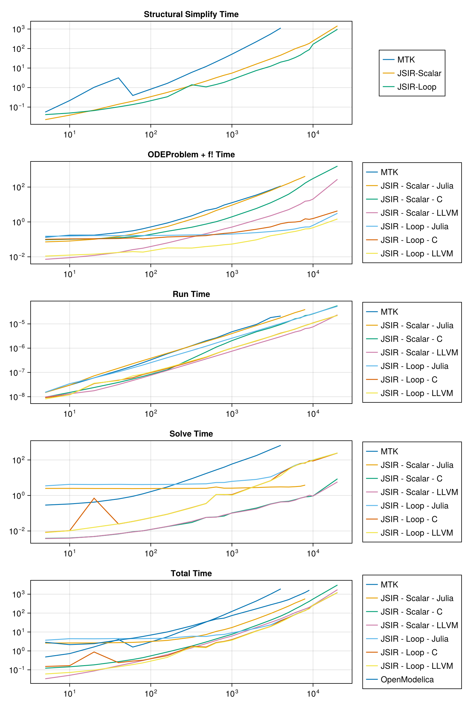

RC Circuit
When a model is defined using repeated components, JuliaSimCompiler is able to take advantage of this to scale efficiently by rerolling equations into loops. This option can be disabled by setting loop=false. Here, we build an RC circuit model with variable numbers of components to show scaling of compile and runtimes of MTK vs JuliaSimCompiler's three backends with and without loop rerolling.
Setup Model Code
using JuliaSimCompiler, ModelingToolkit, OrdinaryDiffEq, BenchmarkTools, ModelingToolkitStandardLibrary, OMJulia, CairoMakie
using ModelingToolkitStandardLibrary.Blocks
using ModelingToolkitStandardLibrary.Electrical# ModelingToolkit and JuliaSimCompiler
const t = Blocks.t
function build_system(n)
systems = @named begin
sine = Sine(frequency = 10)
source = Voltage()
resistors[1:n] = Resistor()
capacitors[1:n] = Capacitor()
ground = Ground()
end
systems = reduce(vcat, systems)
eqs = [connect(sine.output, source.V)
connect(source.p, resistors[1].p)
[connect(resistors[i].n, resistors[i + 1].p, capacitors[i].p)
for i in 1:(n - 1)]
connect(resistors[end].n, capacitors[end].p)
[connect(capacitors[i].n, source.n) for i in 1:n]
connect(source.n, ground.g)]
@named sys = ODESystem(eqs, t; systems)
u0 = [capacitors[i].v => float(i) for i in 1:n];
ps = [[resistors[i].R => 1 / i for i in 1:n];
[capacitors[i].C => 1 / i^2 for i in 1:n]]
return sys, u0, ps
end
function compile_run_problem(sys, u0, ps; target=JuliaSimCompiler.JuliaTarget(), duref=nothing)
tspan = (0.0, 10.0)
t0 = time()
prob = if target === JuliaSimCompiler.JuliaTarget()
ODEProblem(sys, u0, tspan, ps; sparse = true)
else
ODEProblem(sys, target, u0, tspan, ps; sparse = true)
end
(; f, u0, p) = prob
ff = f.f
du = similar(u0)
ff(du, u0, p, 0.0)
t_fode = time() - t0
duref === nothing || @assert duref ≈ du
t_run = @belapsed $ff($du, $u0, $p, 0.0)
t_solve = @elapsed solve(prob, Rodas5(autodiff = false))
(t_fode, t_run, t_solve), du
end
const C = JuliaSimCompiler.CTarget();
const LLVM = JuliaSimCompiler.llvm.LLVMTarget();
function run_and_time_julia!(ss_times, times, max_sizes, i, n)
sys, u0, ps = build_system(n);
if n <= max_sizes[1]
ss_times[i, 1] = @elapsed sys_mtk = structural_simplify(sys)
times[i, 1], _ = compile_run_problem(sys_mtk, u0, ps)
end
ss_times[i, 2] = @elapsed sys_jsir_scalar = structural_simplify(IRSystem(sys), loop=false)
ss_times[i, 3] = @elapsed sys_jsir_loop = structural_simplify(JuliaSimCompiler.compressed_connection_expansion(sys))
oderef = daeref = nothing
n <= max_sizes[2] && ((times[i, 2], oderef) = compile_run_problem(sys_jsir_scalar, u0, ps; duref = oderef))
n <= max_sizes[3] && ((times[i, 3], oderef) = compile_run_problem(sys_jsir_scalar, u0, ps; target=C, duref = oderef))
n <= max_sizes[4] && ((times[i, 4], oderef) = compile_run_problem(sys_jsir_scalar, u0, ps; target=LLVM, duref = oderef))
n <= max_sizes[5] && ((times[i, 5], deeref) = compile_run_problem(sys_jsir_loop, u0, ps; duref = daeref))
n <= max_sizes[6] && ((times[i, 6], daeref) = compile_run_problem(sys_jsir_loop, u0, ps; target=C, duref = daeref))
n <= max_sizes[7] && ((times[i, 7], daeref) = compile_run_problem(sys_jsir_loop, u0, ps; target=LLVM, duref = daeref))
for j = 1:7
ss_time = j == 1 ? ss_times[i,1] : ss_times[i, 2 + (j >= 5)]
t_fode, t_run, t_solve = times[i,j]
total_times[i, j] = ss_time + t_fode + t_solve
end
endrun_and_time_julia! (generic function with 1 method)N = [5, 10, 20, 40, 60, 80, 160, 320, 480, 640, 800, 1000, 2000, 3000, 4000, 5000, 6000, 7000, 8000, 9000, 10000, 20000];
# max size we test per method
max_sizes = [4_000, 8_000, 20_000, 20_000, 20_000, 20_000, 20_000, 9000];
# NaN-initialize so Makie will ignore incomplete
ss_times = fill(NaN, length(N), 3);
times = fill((NaN,NaN,NaN), length(N), length(max_sizes) - 1);
total_times = fill(NaN, length(N), length(max_sizes));Julia Timings
@time run_and_time_julia!(ss_times, times, max_sizes, 1, 4); # precompile95.451503 seconds (77.68 M allocations: 5.162 GiB, 29.48% gc time, 70.24%
compilation time: 17% of which was recompilation)OpenModelica Timings
# OMJ
const omod = OMJulia.OMCSession();
OMJulia.sendExpression(omod, "getVersion()")
OMJulia.sendExpression(omod, "installPackage(Modelica)")
const modelicafile = joinpath(@__DIR__, "RC_Circuit.mo")
function time_open_modelica(n::Int)
totaltime = @elapsed res = begin
@sync ModelicaSystem(omod, modelicafile, "RC_Circuit.Test.RC_Circuit_MTK_test_$n")
sendExpression(omod, "simulate(RC_Circuit.Test.RC_Circuit_MTK_test_$n)")
end
@assert res["messages"][1:11] == "LOG_SUCCESS"
return totaltime
end
function run_and_time_om!(ss_times, times, max_sizes, i, n)
run_and_time_julia!(ss_times, times, max_sizes, i, n)
if n <= max_sizes[8]
total_times[i, 8] = time_open_modelica(n)
end
@views println("n = $(n)\nstructural_simplify_times = $(ss_times[i,:])\ncomponent times = $(times[i, :])\ntotal times = $(total_times[i, :])")
end
for (i, n) in enumerate(N)
@time run_and_time_om!(ss_times, times, max_sizes, i, n)
end
OMJulia.quit(omod)n = 5
structural_simplify_times = [0.055474675, 0.02277886, 0.041151794]
component times = [(0.13318610191345215, 1.494889779559118e-8, 0.287177452)
, (0.07156586647033691, 1.494889779559118e-8, 2.491698035), (0.095299005508
42285, 9.588588588588589e-9, 0.003849758), (0.007200002670288086, 9.7697697
6976977e-9, 0.003738239), (0.1514570713043213, 1.5269539078156315e-8, 3.479
732107), (0.10093402862548828, 9.149149149149149e-9, 0.008433229), (0.01098
5136032104492, 8.097097097097096e-9, 0.008114133)]
total times = [0.4758382289134522, 2.586042761470337, 0.12192762350842284,
0.03371710167028809, 3.672340972304321, 0.1505190516254883, 0.0602510630321
0449, 2.854062809]
38.839895 seconds (8.77 M allocations: 623.734 MiB, 70.27% gc time, 19.35%
compilation time)
n = 10
structural_simplify_times = [0.216242925, 0.038608836, 0.049577934]
component times = [(0.17351293563842773, 2.9878391959799e-8, 0.331710896),
(0.08053898811340332, 2.9878391959799e-8, 2.504772654), (0.1021430492401123
, 1.494889779559118e-8, 0.004020056), (0.008872032165527344, 1.317535070140
2805e-8, 0.003925577), (0.15591812133789062, 3.438972809667673e-8, 4.217937
949), (0.10624909400939941, 1.198098098098098e-8, 0.010405683), (0.01254010
2005004883, 1.1991991991991992e-8, 0.010357243)]
total times = [0.7214667566384276, 2.623920478113403, 0.1447719412401123, 0
.051406445165527344, 4.423434004337891, 0.1662327110093994, 0.0724752790050
0488, 2.145081961]
39.426997 seconds (8.94 M allocations: 637.956 MiB, 69.58% gc time, 19.69%
compilation time)
n = 20
structural_simplify_times = [1.031870862, 0.070035362, 0.066348562]
component times = [(0.174576997756958, 5.972403258655804e-8, 0.422061304),
(0.10133004188537598, 7.226002055498458e-8, 2.46582907), (0.108634948730468
75, 2.3904618473895583e-8, 0.004859919), (0.01200103759765625, 1.7645290581
162325e-8, 0.004880169), (0.16419506072998047, 5.9469450101833e-8, 4.133380
594), (0.10819697380065918, 3.4651560926485396e-8, 0.702362375), (0.0141940
11688232422, 3.5839879154078555e-8, 0.016094505)]
total times = [1.6285091637569582, 2.637194473885376, 0.18353022973046873,
0.08691656859765626, 4.3639242167299805, 0.8769079108006592, 0.096637078688
23242, 2.418560333]
43.113707 seconds (10.22 M allocations: 738.848 MiB, 64.09% gc time, 21.31
% compilation time)
n = 40
structural_simplify_times = [3.148149386, 0.140004972, 0.10226246]
component times = [(0.2428431510925293, 1.1943784378437845e-7, 0.636608886)
, (0.14593291282653809, 1.4929197080291972e-7, 2.450767194), (0.12363505363
464355, 3.8829637096774194e-8, 0.006825973), (0.017731189727783203, 3.18209
2555331992e-8, 0.006999911), (0.16331696510314941, 1.0692612419700214e-7, 4
.233750429), (0.11187195777893066, 4.7790273556231e-8, 0.024734601), (0.017
687082290649414, 4.6002024291497976e-8, 0.025235317)]
total times = [4.02760142309253, 2.736705078826538, 0.27046599863464355, 0.
1647360727277832, 4.4993298541031495, 0.23886901877893066, 0.14518485929064
942, 3.73833887]
48.784386 seconds (11.90 M allocations: 878.899 MiB, 57.14% gc time, 22.26
% compilation time)
n = 60
structural_simplify_times = [0.393025462, 0.201193696, 0.1353987]
component times = [(0.30972981452941895, 1.8214306569343066e-7, 0.896974657
), (0.19967293739318848, 2.292945054945055e-7, 2.426915441), (0.14188694953
918457, 5.375532994923858e-8, 0.009035413), (0.02579808235168457, 4.6601617
795753284e-8, 0.008784526), (0.16715312004089355, 1.5469516728624535e-7, 4.
148425758), (0.12083101272583008, 6.035575942915393e-8, 0.034431009), (0.01
9797086715698242, 7.168448098663925e-8, 0.034201592)]
total times = [1.599729933529419, 2.8277820743931885, 0.3521160585391846, 0
.23577630435168456, 4.450977578040893, 0.2906607217258301, 0.18939737871569
826, 4.707237888]
48.538652 seconds (13.96 M allocations: 1.023 GiB, 57.66% gc time, 16.91%
compilation time)
n = 80
structural_simplify_times = [0.60154015, 0.269170861, 0.170334954]
component times = [(0.4061930179595947, 2.523260273972603e-7, 1.235847572),
(0.2646629810333252, 3.069595141700405e-7, 2.445410202), (0.16027903556823
73, 6.867725409836065e-8, 0.010206864), (0.031219005584716797, 6.1242609582
05912e-8, 0.010214473), (0.1646270751953125, 2.0280000000000002e-7, 4.13374
6922), (0.10694217681884766, 8.155440414507773e-8, 0.044818832), (0.0186660
2897644043, 8.565972944849114e-8, 0.044870011)]
total times = [2.2435807399595946, 2.9792440440333254, 0.43965676056823727,
0.3106043395847168, 4.468708951195313, 0.32209596281884767, 0.233870993976
44046, 5.80363846]
50.814078 seconds (16.43 M allocations: 1.217 GiB, 55.63% gc time, 17.05%
compilation time)
n = 160
structural_simplify_times = [1.645106967, 0.565478967, 0.337975427]
component times = [(0.8717041015625, 5.833646408839779e-7, 3.016673138), (0
.545957088470459, 6.171618497109827e-7, 2.476430983), (0.291079044342041, 1
.2838851351351352e-7, 0.01774951), (0.06237602233886719, 1.209270718232044e
-7, 0.017997708), (0.17028117179870605, 4.064e-7, 4.198250351), (0.13737893
104553223, 1.4576758045292016e-7, 0.087710089), (0.03219103813171387, 1.564
8350253807107e-7, 0.087137484)]
total times = [5.5334842065625, 3.587867038470459, 0.874307521342041, 0.645
8526973388672, 4.706506949798706, 0.5630644470455323, 0.45730394913171385,
10.051228281]
62.437663 seconds (27.90 M allocations: 2.113 GiB, 46.03% gc time, 17.78%
compilation time)
n = 320
structural_simplify_times = [6.030871262, 1.280177766, 1.393309989]
component times = [(2.248494863510132, 1.2669e-6, 8.813930007), (1.44077610
96954346, 1.2429e-6, 2.490612827), (0.49733495712280273, 3.702864077669903e
-7, 0.030040976), (0.13613605499267578, 2.403643031784841e-7, 0.034737576),
(0.18024301528930664, 8.003157894736842e-7, 4.406806826), (0.1512320041656
4941, 2.799655172413793e-7, 0.207413505), (0.03171896934509277, 3.002749003
9840636e-7, 0.202756304)]
total times = [17.093296132510133, 5.211566702695435, 1.8075536991228027, 1
.4510513969926757, 5.9803598302893075, 1.7519554981656493, 1.62778526234509
28, 21.144762938]
86.964974 seconds (59.05 M allocations: 4.876 GiB, 35.70% gc time, 21.79%
compilation time)
n = 480
structural_simplify_times = [11.991125605, 2.150297467, 1.08559625]
component times = [(4.589046001434326, 2.0266666666666666e-6, 17.250110091)
, (2.6298511028289795, 1.8689e-6, 2.526096017), (0.7546989917755127, 6.9310
13513513514e-7, 0.058045438), (0.21320509910583496, 3.598516746411484e-7, 0
.05782053), (0.18416905403137207, 1.2019e-6, 4.529922173), (0.1635761260986
328, 4.20497487437186e-7, 0.351784616), (0.0387568473815918, 4.355e-7, 0.35
3143515)]
total times = [33.83028169743433, 7.30624458682898, 2.963041896775513, 2.42
1323096105835, 5.799687477031372, 1.6009569920986328, 1.4774966123815918, 3
4.645253614]
121.515304 seconds (102.96 M allocations: 9.302 GiB, 26.77% gc time, 24.40%
compilation time)
n = 640
structural_simplify_times = [20.99491965, 3.205200333, 1.438450701]
component times = [(6.01695704460144, 2.663222222222222e-6, 27.485237605),
(4.540725946426392, 2.5065555555555555e-6, 2.991006285), (1.034264087677002
, 1.102e-6, 0.061421527), (0.2964920997619629, 4.793282051282052e-7, 0.0600
2068), (0.1880950927734375, 1.631e-6, 5.358257244), (0.19654107093811035, 6
.026497175141243e-7, 1.135063392), (0.0433349609375, 6.141714285714285e-7,
1.138297642)]
total times = [54.497114299601435, 10.736932564426393, 4.300885947677003, 3
.561713112761963, 6.984803037773437, 2.7700551639381104, 2.6200833039375, 4
7.997920703]
164.253167 seconds (157.40 M allocations: 15.107 GiB, 20.78% gc time, 26.63
% compilation time)
n = 800
structural_simplify_times = [32.551953023, 4.279339367, 1.847751799]
component times = [(9.318601846694946, 3.541125e-6, 39.132615589), (6.43860
387802124, 3.145e-6, 2.57079587), (1.4056270122528076, 1.49e-6, 0.069466177
), (0.39479494094848633, 5.990393258426966e-7, 0.079731229), (0.19431686401
367188, 2.06e-6, 5.372911864), (0.22035884857177734, 7.927448979591836e-7,
1.116243473), (0.049011945724487305, 7.947373737373738e-7, 1.143111553)]
total times = [81.00317045869494, 13.28873911502124, 5.754432556252808, 4.7
53865536948487, 7.414980527013672, 3.1843541205717774, 3.039875297724487, 5
4.036461124]
202.686259 seconds (227.73 M allocations: 24.875 GiB, 18.30% gc time, 29.32
% compilation time)
n = 1000
structural_simplify_times = [51.280046797, 5.492410958, 2.597352804]
component times = [(12.67124319076538, 4.748571428571429e-6, 58.793678122),
(9.185302972793579, 4.011428571428571e-6, 2.574462402), (1.963776826858520
5, 2.042222222222222e-6, 0.104384644), (0.5067720413208008, 7.5016949152542
38e-7, 0.100934393), (0.2014751434326172, 2.567777777777778e-6, 6.226227636
), (0.24027681350708008, 1.001e-6, 1.121562721), (0.05370903015136719, 9.90
9090909090909e-7, 1.044360483)]
total times = [122.74496810976538, 17.25217633279358, 7.56057242885852, 6.1
00117392320801, 9.025055583432618, 3.95919233850708, 3.695422317151367, 74.
311648031]
272.982016 seconds (338.01 M allocations: 44.854 GiB, 15.00% gc time, 30.53
% compilation time)
n = 2000
structural_simplify_times = [223.455950612, 16.019540413, 7.472949718]
component times = [(34.95927691459656, 9.459e-6, 176.274374595), (30.179293
870925903, 8.573333333333333e-6, 2.78794295), (5.9009010791778564, 4.731428
571428571e-6, 0.195180177), (1.2993240356445312, 1.517e-6, 0.173722269), (0
.24380707740783691, 5.1515e-6, 8.032644833), (0.3800239562988281, 1.99e-6,
3.500774392), (0.09425497055053711, 2.032111111111111e-6, 3.477244062)]
total times = [434.68960212159664, 48.986777233925906, 22.11562166917786, 1
7.49258671764453, 15.749401628407838, 11.353748066298827, 11.04444875055053
6, 167.981553246]
739.896503 seconds (1.21 G allocations: 231.271 GiB, 9.03% gc time, 31.94%
compilation time)
n = 3000
structural_simplify_times = [551.699296533, 29.473360622, 12.382849153]
component times = [(69.10654783248901, 1.824e-5, 386.529645126), (62.266882
1811676, 1.323e-5, 2.981537452), (12.537684917449951, 6.9198e-6, 0.33298790
9), (2.256294012069702, 2.2576666666666666e-6, 0.322758989), (0.28157091140
74707, 7.7675e-6, 11.170189914), (0.5200741291046143, 3.0275e-6, 6.78818027
3), (0.16085290908813477, 3.00875e-6, 6.718382017)]
total times = [1007.335489491489, 94.7217802551676, 42.344033448449956, 32.
052413623069704, 23.83460997840747, 19.691103555104615, 19.262084079088133,
274.580974863]
1498.215643 seconds (2.68 G allocations: 583.067 GiB, 9.18% gc time, 33.04%
compilation time)
n = 4000
structural_simplify_times = [1125.417732138, 45.780297109, 20.18244265]
component times = [(114.59447717666626, 2.105e-5, 664.02755581), (108.44034
194946289, 1.797e-5, 3.042550669), (23.414681911468506, 9.5e-6, 0.438777872
), (3.5823450088500977, 3.004875e-6, 0.428846877), (0.31735992431640625, 1.
038e-5, 20.344490055), (0.7872397899627686, 4.1714285714285715e-6, 17.78317
6286), (0.19977402687072754, 4.062714285714286e-6, 13.245087849)]
total times = [1904.0397651246662, 157.2631897274629, 69.63375689246851, 49
.7914889948501, 40.844292629316406, 38.75285872596277, 33.62730452587073, 3
81.905581857]
2623.379341 seconds (4.79 G allocations: 1.370 TiB, 10.98% gc time, 32.38%
compilation time)
n = 5000
structural_simplify_times = [NaN, 69.001172604, 25.352097337]
component times = [(NaN, NaN, NaN), (163.09442400932312, 2.342e-5, 2.995238
262), (38.964422941207886, 1.257e-5, 0.470896808), (5.081027030944824, 3.83
7375e-6, 0.442502108), (0.35176920890808105, 1.299e-5, 32.561625895), (0.94
7883129119873, 5.076666666666667e-6, 31.987466537), (0.24872493743896484, 5
.08e-6, 29.189784318)]
total times = [NaN, 235.0908348753231, 108.4364923532079, 74.52470174294483
, 58.265492440908076, 58.28744700311987, 54.79060659243896, 514.695722472]
986.689924 seconds (307.98 M allocations: 51.932 GiB, 5.83% gc time, 16.33%
compilation time)
n = 6000
structural_simplify_times = [NaN, 97.495227748, 34.261573371]
component times = [(NaN, NaN, NaN), (237.4842929840088, 2.91e-5, 3.12291146
4), (66.94326281547546, 1.627e-5, 0.577191757), (7.542001008987427, 4.65e-6
, 0.540416562), (0.3983628749847412, 1.5569e-5, 50.205069498), (0.986402034
7595215, 6.116e-6, 46.621096228), (0.28508591651916504, 6.1698e-6, 47.93071
9433)]
total times = [NaN, 338.1024321960088, 165.01568232047546, 105.577645318987
44, 84.86500574398474, 81.86907163375952, 82.47737872051917, 727.679089485]
1399.215170 seconds (390.34 M allocations: 69.668 GiB, 4.68% gc time, 16.54
% compilation time)
n = 7000
structural_simplify_times = [NaN, 122.96175485, 46.553131648]
component times = [(NaN, NaN, NaN), (317.24213004112244, 3.384e-5, 3.301811
464), (107.92149305343628, 1.775e-5, 0.707847072), (10.580306053161621, 5.2
46666666666667e-6, 0.715790549), (0.4668099880218506, 1.84e-5, 62.927394221
), (1.0839729309082031, 7.3725e-6, 62.216667877), (0.3344080448150635, 7.31
5e-6, 58.855855931)]
total times = [NaN, 443.5056963551225, 231.59109497543628, 134.257851452161
62, 109.94733585702184, 109.8537724559082, 105.74339562381506, 959.81911965
9]
1839.627724 seconds (483.06 M allocations: 90.232 GiB, 4.23% gc time, 16.64
% compilation time)
n = 8000
structural_simplify_times = [NaN, 149.055657454, 66.951480407]
component times = [(NaN, NaN, NaN), (414.8168170452118, 3.915e-5, 3.8331788
88), (169.89392399787903, 2.206e-5, 0.829191658), (15.41580605506897, 6.395
8e-6, 0.812141012), (0.5117249488830566, 2.089e-5, 70.723801509), (1.505227
0889282227, 8.603333333333335e-6, 67.062331287), (0.39702486991882324, 8.55
6666666666665e-6, 71.732741855)]
total times = [NaN, 567.7056533872118, 319.778773109879, 165.28360452106898
, 138.18700686488307, 135.51903878292825, 139.08124713191881, 1236.09222044
9]
2359.808526 seconds (586.82 M allocations: 112.939 GiB, 4.43% gc time, 16.7
4% compilation time)
n = 9000
structural_simplify_times = [NaN, 183.640696841, 88.117998904]
component times = [(NaN, NaN, NaN), (NaN, NaN, NaN), (234.7355499267578, 2.
3349e-5, 0.864734547), (16.660064220428467, 6.756e-6, 1.03209083), (0.51573
3003616333, 2.367e-5, 84.60993674), (1.4118640422821045, 9.72e-6, 89.358702
016), (0.4062337875366211, 9.67e-6, 80.470913261)]
total times = [NaN, NaN, 419.24098131475785, 201.33285189142845, 173.243668
64761635, 178.8885649622821, 168.99514595253663, 1615.703214229]
2475.901347 seconds (673.37 M allocations: 132.035 GiB, 4.50% gc time, 0.18
% compilation time)
n = 10000
structural_simplify_times = [NaN, 245.347002371, 166.144674753]
component times = [(NaN, NaN, NaN), (NaN, NaN, NaN), (308.301570892334, 2.5
96e-5, 0.941990467), (20.51499605178833, 7.56e-6, 0.923005884), (0.63812398
91052246, 2.645e-5, 100.819187305), (1.5688071250915527, 1.101e-5, 87.79191
3635), (0.46966004371643066, 1.086e-5, 98.916888336)]
total times = [NaN, NaN, 554.590563730334, 266.7850043067884, 267.601986047
10524, 255.50539551309157, 265.53122313271643, NaN]
1116.926976 seconds (784.95 M allocations: 157.060 GiB, 17.44% gc time, 0.4
5% compilation time)
n = 20000
structural_simplify_times = [NaN, 1444.93921729, 966.658423394]
component times = [(NaN, NaN, NaN), (NaN, NaN, NaN), (1595.5909497737885, 5
.604e-5, 8.657652933), (277.65615606307983, 2.355e-5, 5.787072309), (3.1322
829723358154, 5.338e-5, 243.992072649), (4.2871739864349365, 2.238e-5, 245.
943673184), (1.47660493850708, 2.236e-5, 247.816087829)]
total times = [NaN, NaN, 3049.187819996788, 1728.3824456620798, 1213.782779
0153358, 1216.889270564435, 1215.9511161615071, NaN]
5151.018592 seconds (2.38 G allocations: 550.116 GiB, 14.17% gc time, 0.09%
compilation time)Dymola Timings
Dymola requires a license server and thus cannot be hosted. This was run locally for the following times:
translation_and_total_times = [
7.027, 7.237
11.295, 11.798
16.681, 17.646
22.125, 23.839
27.529, 29.82
33.282, 36.622
39.007, 43.088
44.825, 51.601
50.281, 56.676
] # TODO: I will add other times once the Dymola license server is back up.
#total_times[:, 6] = translation_and_total_times[1:length(N_x),2]Error: ParseError:
# Error @ /cache/build/exclusive-amdci1-0/julialang/scimlbenchmarks-dot-jl/
benchmarks/ModelingToolkit/RCCircuit.jmd:4:1
7.027, 7.237
┌─────────────
11.295, 11.798
16.681, 17.646
⋮
44.825, 51.601
50.281, 56.676
#────────────┘ ── Expected `]`Results
f = Figure(size=(800,1200));
ss_names = ["MTK", "JSIR-Scalar", "JSIR-Loop"];
let ax = Axis(f[1, 1]; yscale = log10, xscale = log10, title="Structural Simplify Time")
_lines = map(eachcol(ss_times)) do ts
lines!(N, ts)
end
Legend(f[1,2], _lines, ss_names)
end
method_names = ["MTK", "JSIR - Scalar - Julia", "JSIR - Scalar - C", "JSIR - Scalar - LLVM", "JSIR - Loop - Julia", "JSIR - Loop - C", "JSIR - Loop - LLVM"];
for (i, timecat) in enumerate(("ODEProblem + f!", "Run", "Solve"))
title = timecat * " Time"
ax = Axis(f[i+1, 1]; yscale = log10, xscale = log10, title)
_lines = map(eachcol(times)) do ts
lines!(N, getindex.(ts, i))
end
Legend(f[i+1, 2], _lines, method_names)
end
let method_names_m = vcat(method_names, "OpenModelica");
ax = Axis(f[5, 1]; yscale = log10, xscale = log10, title = "Total Time")
_lines = map(Base.Fix1(lines!, N), eachcol(total_times))
Legend(f[5, 2], _lines, method_names_m)
end
f
All three backends compiled more quickly with loops, but the C and LLVM backends are so much quicker to compile than the Julia backend that this made much less difference for them. The impact on runtime was more varied.
Appendix
Appendix
These benchmarks are a part of the SciMLBenchmarks.jl repository, found at: https://github.com/SciML/SciMLBenchmarks.jl. For more information on high-performance scientific machine learning, check out the SciML Open Source Software Organization https://sciml.ai.
To locally run this benchmark, do the following commands:
using SciMLBenchmarks
SciMLBenchmarks.weave_file("benchmarks/ModelingToolkit","RCCircuit.jmd")Computer Information:
Julia Version 1.10.4
Commit 48d4fd48430 (2024-06-04 10:41 UTC)
Build Info:
Official https://julialang.org/ release
Platform Info:
OS: Linux (x86_64-linux-gnu)
CPU: 128 × AMD EPYC 7502 32-Core Processor
WORD_SIZE: 64
LIBM: libopenlibm
LLVM: libLLVM-15.0.7 (ORCJIT, znver2)
Threads: 1 default, 0 interactive, 1 GC (on 128 virtual cores)
Environment:
JULIA_CPU_THREADS = 128
JULIA_DEPOT_PATH = /cache/julia-buildkite-plugin/depots/5b300254-1738-4989-ae0a-f4d2d937f953
JULIA_PKG_SERVER = juliahub.com
Package Information:
Status `/cache/build/exclusive-amdci1-0/julialang/scimlbenchmarks-dot-jl/benchmarks/ModelingToolkit/Project.toml`
[6e4b80f9] BenchmarkTools v1.5.0
[336ed68f] CSV v0.10.14
⌅ [13f3f980] CairoMakie v0.11.11
[a93c6f00] DataFrames v1.6.1
[8391cb6b] JuliaSimCompiler v0.1.12
[9cbdfd5a] JuliaSimCompilerRuntime v1.0.2
[7ed4a6bd] LinearSolve v2.30.1
[961ee093] ModelingToolkit v9.19.0
[16a59e39] ModelingToolkitStandardLibrary v2.7.2
[0f4fe800] OMJulia v0.3.2
[1dea7af3] OrdinaryDiffEq v6.83.1
[f27b6e38] Polynomials v4.0.11
[ba661fbb] PreferenceTools v0.1.2
[31c91b34] SciMLBenchmarks v0.1.3
[0c5d862f] Symbolics v5.30.3
Info Packages marked with ⌅ have new versions available but compatibility constraints restrict them from upgrading. To see why use `status --outdated`And the full manifest:
Status `/cache/build/exclusive-amdci1-0/julialang/scimlbenchmarks-dot-jl/benchmarks/ModelingToolkit/Manifest.toml`
[47edcb42] ADTypes v1.3.0
[621f4979] AbstractFFTs v1.5.0
[1520ce14] AbstractTrees v0.4.5
[7d9f7c33] Accessors v0.1.36
[79e6a3ab] Adapt v4.0.4
[66dad0bd] AliasTables v1.1.3
[27a7e980] Animations v0.4.1
[ec485272] ArnoldiMethod v0.4.0
[4fba245c] ArrayInterface v7.11.0
[4c555306] ArrayLayouts v1.9.4
[67c07d97] Automa v1.0.3
[13072b0f] AxisAlgorithms v1.1.0
[39de3d68] AxisArrays v0.4.7
[6e4b80f9] BenchmarkTools v1.5.0
[e2ed5e7c] Bijections v0.1.6
[62783981] BitTwiddlingConvenienceFunctions v0.1.5
[fa961155] CEnum v0.5.0
[2a0fbf3d] CPUSummary v0.2.5
[00ebfdb7] CSTParser v3.4.3
[336ed68f] CSV v0.10.14
[159f3aea] Cairo v1.0.5
⌅ [13f3f980] CairoMakie v0.11.11
[49dc2e85] Calculus v0.5.1
[082447d4] ChainRules v1.69.0
[d360d2e6] ChainRulesCore v1.24.0
[fb6a15b2] CloseOpenIntervals v0.1.12
[944b1d66] CodecZlib v0.7.4
[a2cac450] ColorBrewer v0.4.0
[35d6a980] ColorSchemes v3.25.0
[3da002f7] ColorTypes v0.11.5
[c3611d14] ColorVectorSpace v0.10.0
[5ae59095] Colors v0.12.11
[861a8166] Combinatorics v1.0.2
[a80b9123] CommonMark v0.8.12
[38540f10] CommonSolve v0.2.4
[bbf7d656] CommonSubexpressions v0.3.0
[34da2185] Compat v4.15.0
[b152e2b5] CompositeTypes v0.1.4
[a33af91c] CompositionsBase v0.1.2
[2569d6c7] ConcreteStructs v0.2.3
[8f4d0f93] Conda v1.10.0
[187b0558] ConstructionBase v1.5.5
[d38c429a] Contour v0.6.3
[adafc99b] CpuId v0.3.1
[a8cc5b0e] Crayons v4.1.1
[9a962f9c] DataAPI v1.16.0
[a93c6f00] DataFrames v1.6.1
[864edb3b] DataStructures v0.18.20
[e2d170a0] DataValueInterfaces v1.0.0
[927a84f5] DelaunayTriangulation v1.0.3
[2b5f629d] DiffEqBase v6.151.3
[459566f4] DiffEqCallbacks v3.6.2
[163ba53b] DiffResults v1.1.0
[b552c78f] DiffRules v1.15.1
[a0c0ee7d] DifferentiationInterface v0.5.5
[31c24e10] Distributions v0.25.109
[ffbed154] DocStringExtensions v0.9.3
[5b8099bc] DomainSets v0.7.14
[fa6b7ba4] DualNumbers v0.6.8
[7c1d4256] DynamicPolynomials v0.5.7
⌅ [06fc5a27] DynamicQuantities v0.13.2
[4e289a0a] EnumX v1.0.4
[f151be2c] EnzymeCore v0.7.5
[429591f6] ExactPredicates v2.2.8
[d4d017d3] ExponentialUtilities v1.26.1
[e2ba6199] ExprTools v0.1.10
⌅ [6b7a57c9] Expronicon v0.8.5
[411431e0] Extents v0.1.3
[7a1cc6ca] FFTW v1.8.0
[7034ab61] FastBroadcast v0.3.3
[9aa1b823] FastClosures v0.3.2
[29a986be] FastLapackInterface v2.0.4
[5789e2e9] FileIO v1.16.3
[8fc22ac5] FilePaths v0.8.3
[48062228] FilePathsBase v0.9.21
[1a297f60] FillArrays v1.11.0
[64ca27bc] FindFirstFunctions v1.2.0
[6a86dc24] FiniteDiff v2.23.1
[53c48c17] FixedPointNumbers v0.8.5
[1fa38f19] Format v1.3.7
[f6369f11] ForwardDiff v0.10.36
[b38be410] FreeType v4.1.1
[663a7486] FreeTypeAbstraction v0.10.3
[069b7b12] FunctionWrappers v1.1.3
[77dc65aa] FunctionWrappersWrappers v0.1.3
[d9f16b24] Functors v0.4.11
[46192b85] GPUArraysCore v0.1.6
[61eb1bfa] GPUCompiler v0.26.5
[c145ed77] GenericSchur v0.5.4
[cf35fbd7] GeoInterface v1.3.4
[5c1252a2] GeometryBasics v0.4.11
[d7ba0133] Git v1.3.1
[c27321d9] Glob v1.3.1
[a2bd30eb] Graphics v1.1.2
[86223c79] Graphs v1.11.1
⌅ [3955a311] GridLayoutBase v0.10.2
[42e2da0e] Grisu v1.0.2
[eafb193a] Highlights v0.5.3
[3e5b6fbb] HostCPUFeatures v0.1.16
[34004b35] HypergeometricFunctions v0.3.23
[7073ff75] IJulia v1.24.2
[615f187c] IfElse v0.1.1
[2803e5a7] ImageAxes v0.6.11
[c817782e] ImageBase v0.1.7
[a09fc81d] ImageCore v0.10.2
[82e4d734] ImageIO v0.6.8
[bc367c6b] ImageMetadata v0.9.9
[9b13fd28] IndirectArrays v1.0.0
[d25df0c9] Inflate v0.1.5
[842dd82b] InlineStrings v1.4.0
[a98d9a8b] Interpolations v0.15.1
[d1acc4aa] IntervalArithmetic v0.22.14
[8197267c] IntervalSets v0.7.10
[3587e190] InverseFunctions v0.1.14
[41ab1584] InvertedIndices v1.3.0
[92d709cd] IrrationalConstants v0.2.2
[f1662d9f] Isoband v0.1.1
[c8e1da08] IterTools v1.10.0
[82899510] IteratorInterfaceExtensions v1.0.0
[692b3bcd] JLLWrappers v1.5.0
[682c06a0] JSON v0.21.4
[b835a17e] JpegTurbo v0.1.5
[98e50ef6] JuliaFormatter v1.0.56
[9c9cc66b] JuliaSimBase v0.1.0
[8391cb6b] JuliaSimCompiler v0.1.12
[9cbdfd5a] JuliaSimCompilerRuntime v1.0.2
[ccbc3e58] JumpProcesses v9.11.1
[ef3ab10e] KLU v0.6.0
[5ab0869b] KernelDensity v0.6.9
[ba0b0d4f] Krylov v0.9.6
[929cbde3] LLVM v7.2.1
[b964fa9f] LaTeXStrings v1.3.1
[2ee39098] LabelledArrays v1.16.0
[984bce1d] LambertW v0.4.6
[23fbe1c1] Latexify v0.16.3
[10f19ff3] LayoutPointers v0.1.15
[5078a376] LazyArrays v2.0.4
[8cdb02fc] LazyModules v0.3.1
[9c8b4983] LightXML v0.9.1
[d3d80556] LineSearches v7.2.0
[7ed4a6bd] LinearSolve v2.30.1
[2ab3a3ac] LogExpFunctions v0.3.28
[bdcacae8] LoopVectorization v0.12.170
[d8e11817] MLStyle v0.4.17
[1914dd2f] MacroTools v0.5.13
⌅ [ee78f7c6] Makie v0.20.10
⌅ [20f20a25] MakieCore v0.7.3
[d125e4d3] ManualMemory v0.1.8
[dbb5928d] MappedArrays v0.4.2
⌅ [0a4f8689] MathTeXEngine v0.5.7
[bb5d69b7] MaybeInplace v0.1.3
[739be429] MbedTLS v1.1.9
[e1d29d7a] Missings v1.2.0
[961ee093] ModelingToolkit v9.19.0
[16a59e39] ModelingToolkitStandardLibrary v2.7.2
[e94cdb99] MosaicViews v0.3.4
[46d2c3a1] MuladdMacro v0.2.4
[102ac46a] MultivariatePolynomials v0.5.6
[ffc61752] Mustache v1.0.19
[d8a4904e] MutableArithmetics v1.4.5
[d41bc354] NLSolversBase v7.8.3
[77ba4419] NaNMath v1.0.2
[f09324ee] Netpbm v1.1.1
[8913a72c] NonlinearSolve v3.13.0
[0f4fe800] OMJulia v0.3.2
[510215fc] Observables v0.5.5
[6fe1bfb0] OffsetArrays v1.14.0
[52e1d378] OpenEXR v0.3.2
[bac558e1] OrderedCollections v1.6.3
[1dea7af3] OrdinaryDiffEq v6.83.1
[90014a1f] PDMats v0.11.31
[f57f5aa1] PNGFiles v0.4.3
[65ce6f38] PackageExtensionCompat v1.0.2
[19eb6ba3] Packing v0.5.0
[5432bcbf] PaddedViews v0.5.12
[d96e819e] Parameters v0.12.3
[69de0a69] Parsers v2.8.1
[eebad327] PkgVersion v0.3.3
[995b91a9] PlotUtils v1.4.1
[e409e4f3] PoissonRandom v0.4.4
[f517fe37] Polyester v0.7.14
[1d0040c9] PolyesterWeave v0.2.1
[647866c9] PolygonOps v0.1.2
[f27b6e38] Polynomials v4.0.11
[2dfb63ee] PooledArrays v1.4.3
[d236fae5] PreallocationTools v0.4.22
[aea7be01] PrecompileTools v1.2.1
[ba661fbb] PreferenceTools v0.1.2
[21216c6a] Preferences v1.4.3
[08abe8d2] PrettyTables v2.3.2
[92933f4c] ProgressMeter v1.10.0
[43287f4e] PtrArrays v1.2.0
[4b34888f] QOI v1.0.0
[1fd47b50] QuadGK v2.9.4
[e6cf234a] RandomNumbers v1.5.3
[b3c3ace0] RangeArrays v0.3.2
[c84ed2f1] Ratios v0.4.5
[c1ae055f] RealDot v0.1.0
[3cdcf5f2] RecipesBase v1.3.4
[731186ca] RecursiveArrayTools v3.24.0
[f2c3362d] RecursiveFactorization v0.2.23
[189a3867] Reexport v1.2.2
[05181044] RelocatableFolders v1.0.1
[ae029012] Requires v1.3.0
[79098fc4] Rmath v0.7.1
[5eaf0fd0] RoundingEmulator v0.2.1
[7e49a35a] RuntimeGeneratedFunctions v0.5.13
[fdea26ae] SIMD v3.5.0
[94e857df] SIMDTypes v0.1.0
[476501e8] SLEEFPirates v0.6.42
[0bca4576] SciMLBase v2.41.3
[31c91b34] SciMLBenchmarks v0.1.3
[c0aeaf25] SciMLOperators v0.3.8
[53ae85a6] SciMLStructures v1.3.0
[6c6a2e73] Scratch v1.2.1
[91c51154] SentinelArrays v1.4.3
[efcf1570] Setfield v1.1.1
[65257c39] ShaderAbstractions v0.4.1
[992d4aef] Showoff v1.0.3
[73760f76] SignedDistanceFields v0.4.0
[727e6d20] SimpleNonlinearSolve v1.10.0
[699a6c99] SimpleTraits v0.9.4
[ce78b400] SimpleUnPack v1.1.0
[45858cf5] Sixel v0.1.3
[66db9d55] SnoopPrecompile v1.0.3
[b85f4697] SoftGlobalScope v1.1.0
[a2af1166] SortingAlgorithms v1.2.1
[47a9eef4] SparseDiffTools v2.19.0
[dc90abb0] SparseInverseSubset v0.1.2
[0a514795] SparseMatrixColorings v0.3.3
[e56a9233] Sparspak v0.3.9
[276daf66] SpecialFunctions v2.4.0
[cae243ae] StackViews v0.1.1
[aedffcd0] Static v0.8.10
[0d7ed370] StaticArrayInterface v1.5.0
[90137ffa] StaticArrays v1.9.5
[1e83bf80] StaticArraysCore v1.4.3
[82ae8749] StatsAPI v1.7.0
[2913bbd2] StatsBase v0.34.3
[4c63d2b9] StatsFuns v1.3.1
[7792a7ef] StrideArraysCore v0.5.6
[69024149] StringEncodings v0.3.7
[892a3eda] StringManipulation v0.3.4
[09ab397b] StructArrays v0.6.18
[2efcf032] SymbolicIndexingInterface v0.3.23
[19f23fe9] SymbolicLimits v0.2.1
[d1185830] SymbolicUtils v2.0.2
[0c5d862f] Symbolics v5.30.3
[3783bdb8] TableTraits v1.0.1
[bd369af6] Tables v1.11.1
[62fd8b95] TensorCore v0.1.1
⌅ [8ea1fca8] TermInterface v0.4.1
[8290d209] ThreadingUtilities v0.5.2
[731e570b] TiffImages v0.10.0
[a759f4b9] TimerOutputs v0.5.24
[0796e94c] Tokenize v0.5.29
[3bb67fe8] TranscodingStreams v0.10.9
[d5829a12] TriangularSolve v0.2.0
[410a4b4d] Tricks v0.1.8
[981d1d27] TriplotBase v0.1.0
[781d530d] TruncatedStacktraces v1.4.0
[5c2747f8] URIs v1.5.1
[3a884ed6] UnPack v1.0.2
[1cfade01] UnicodeFun v0.4.1
[1986cc42] Unitful v1.20.0
[a7c27f48] Unityper v0.1.6
[3d5dd08c] VectorizationBase v0.21.68
[81def892] VersionParsing v1.3.0
[19fa3120] VertexSafeGraphs v0.2.0
[ea10d353] WeakRefStrings v1.4.2
[44d3d7a6] Weave v0.10.12
[efce3f68] WoodburyMatrices v1.0.0
[76eceee3] WorkerUtilities v1.6.1
[ddb6d928] YAML v0.4.11
[c2297ded] ZMQ v1.2.6
[6e34b625] Bzip2_jll v1.0.8+1
[4e9b3aee] CRlibm_jll v1.0.1+0
[83423d85] Cairo_jll v1.18.0+2
[5ae413db] EarCut_jll v2.2.4+0
[2e619515] Expat_jll v2.6.2+0
[b22a6f82] FFMPEG_jll v6.1.1+0
[f5851436] FFTW_jll v3.3.10+0
[a3f928ae] Fontconfig_jll v2.13.96+0
[d7e528f0] FreeType2_jll v2.13.2+0
[559328eb] FriBidi_jll v1.0.14+0
[78b55507] Gettext_jll v0.21.0+0
[f8c6e375] Git_jll v2.44.0+2
[7746bdde] Glib_jll v2.80.2+0
[3b182d85] Graphite2_jll v1.3.14+0
[2e76f6c2] HarfBuzz_jll v2.8.1+1
[905a6f67] Imath_jll v3.1.11+0
[1d5cc7b8] IntelOpenMP_jll v2024.1.0+0
[aacddb02] JpegTurbo_jll v3.0.3+0
[c1c5ebd0] LAME_jll v3.100.2+0
⌅ [dad2f222] LLVMExtra_jll v0.0.29+0
[1d63c593] LLVMOpenMP_jll v15.0.7+0
[dd4b983a] LZO_jll v2.10.2+0
⌅ [e9f186c6] Libffi_jll v3.2.2+1
[d4300ac3] Libgcrypt_jll v1.8.11+0
[7add5ba3] Libgpg_error_jll v1.49.0+0
[94ce4f54] Libiconv_jll v1.17.0+0
[4b2f31a3] Libmount_jll v2.40.1+0
[38a345b3] Libuuid_jll v2.40.1+0
[856f044c] MKL_jll v2024.1.0+0
[e7412a2a] Ogg_jll v1.3.5+1
[18a262bb] OpenEXR_jll v3.2.4+0
[458c3c95] OpenSSL_jll v3.0.14+0
[efe28fd5] OpenSpecFun_jll v0.5.5+0
[91d4177d] Opus_jll v1.3.2+0
[36c8627f] Pango_jll v1.52.2+0
[30392449] Pixman_jll v0.43.4+0
[f50d1b31] Rmath_jll v0.4.2+0
[02c8fc9c] XML2_jll v2.12.7+0
[aed1982a] XSLT_jll v1.1.34+0
[4f6342f7] Xorg_libX11_jll v1.8.6+0
[0c0b7dd1] Xorg_libXau_jll v1.0.11+0
[a3789734] Xorg_libXdmcp_jll v1.1.4+0
[1082639a] Xorg_libXext_jll v1.3.6+0
[ea2f1a96] Xorg_libXrender_jll v0.9.11+0
[14d82f49] Xorg_libpthread_stubs_jll v0.1.1+0
[c7cfdc94] Xorg_libxcb_jll v1.15.0+0
[c5fb5394] Xorg_xtrans_jll v1.5.0+0
[8f1865be] ZeroMQ_jll v4.3.5+0
[9a68df92] isoband_jll v0.2.3+0
[a4ae2306] libaom_jll v3.9.0+0
[0ac62f75] libass_jll v0.15.1+0
[f638f0a6] libfdk_aac_jll v2.0.2+0
[b53b4c65] libpng_jll v1.6.43+1
[075b6546] libsixel_jll v1.10.3+0
[a9144af2] libsodium_jll v1.0.20+0
[f27f6e37] libvorbis_jll v1.3.7+1
[1317d2d5] oneTBB_jll v2021.12.0+0
[1270edf5] x264_jll v2021.5.5+0
[dfaa095f] x265_jll v3.5.0+0
[0dad84c5] ArgTools v1.1.1
[56f22d72] Artifacts
[2a0f44e3] Base64
[8bf52ea8] CRC32c
[ade2ca70] Dates
[8ba89e20] Distributed
[f43a241f] Downloads v1.6.0
[7b1f6079] FileWatching
[9fa8497b] Future
[b77e0a4c] InteractiveUtils
[4af54fe1] LazyArtifacts
[b27032c2] LibCURL v0.6.4
[76f85450] LibGit2
[8f399da3] Libdl
[37e2e46d] LinearAlgebra
[56ddb016] Logging
[d6f4376e] Markdown
[a63ad114] Mmap
[ca575930] NetworkOptions v1.2.0
[44cfe95a] Pkg v1.10.0
[de0858da] Printf
[9abbd945] Profile
[3fa0cd96] REPL
[9a3f8284] Random
[ea8e919c] SHA v0.7.0
[9e88b42a] Serialization
[1a1011a3] SharedArrays
[6462fe0b] Sockets
[2f01184e] SparseArrays v1.10.0
[10745b16] Statistics v1.10.0
[4607b0f0] SuiteSparse
[fa267f1f] TOML v1.0.3
[a4e569a6] Tar v1.10.0
[8dfed614] Test
[cf7118a7] UUIDs
[4ec0a83e] Unicode
[e66e0078] CompilerSupportLibraries_jll v1.1.1+0
[deac9b47] LibCURL_jll v8.4.0+0
[e37daf67] LibGit2_jll v1.6.4+0
[29816b5a] LibSSH2_jll v1.11.0+1
[c8ffd9c3] MbedTLS_jll v2.28.2+1
[14a3606d] MozillaCACerts_jll v2023.1.10
[4536629a] OpenBLAS_jll v0.3.23+4
[05823500] OpenLibm_jll v0.8.1+2
[efcefdf7] PCRE2_jll v10.42.0+1
[bea87d4a] SuiteSparse_jll v7.2.1+1
[83775a58] Zlib_jll v1.2.13+1
[8e850b90] libblastrampoline_jll v5.8.0+1
[8e850ede] nghttp2_jll v1.52.0+1
[3f19e933] p7zip_jll v17.4.0+2
Info Packages marked with ⌅ have new versions available but compatibility constraints restrict them from upgrading. To see why use `status --outdated -m`